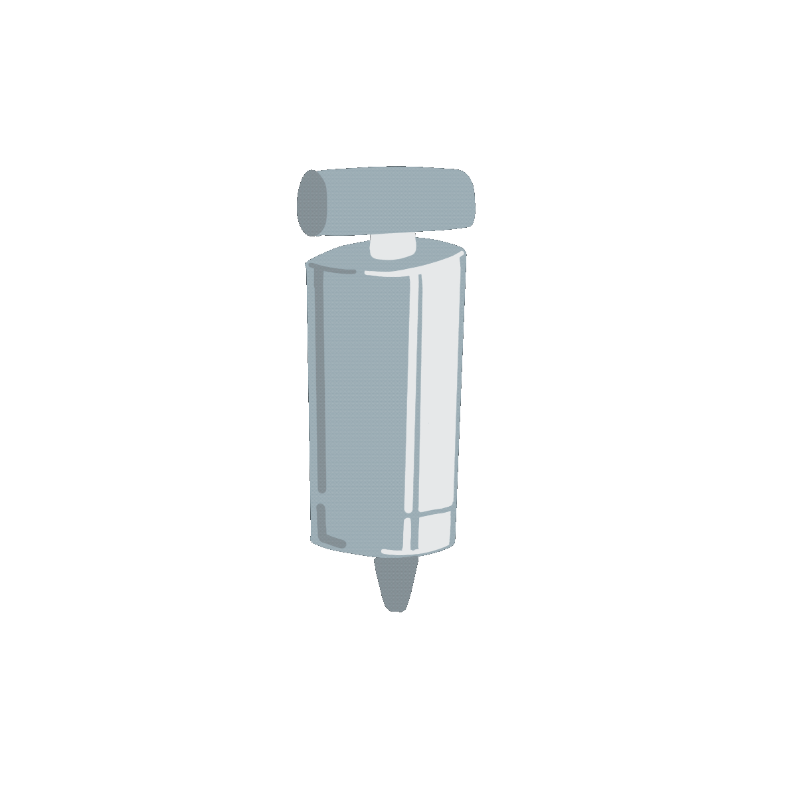

Description
Kaylee Nasser, lover of trivia, deserved to have a platform where she could share her interests and facts. This application allowed us to create that.
Kaylee's Love Guesser has two buttons.
Swap Tool Button
This is the "swap tools" button, which will equip a tool onto the users cursor:
There are three available tools:
 When the user clicks the heart with the pump equipped, the heart will inflate - implying more love.
When the user clicks the heart with the hand, the heart will have air squished out of it.

Lastly, when the heart is clicked with the check mark, Kaylee will judge the user's guess and provide her opinion.
Whether it's ceiling fans, snakes, nuts or wet socks, Kaylee always has something interesting to say.
Heart Balloon Button
The heart button will respond to whichever tool is selected, as described above. Once the user has checked their answer they will be equipped with a new tool:
This tool allows the user to go to the next item when they press on the heart.